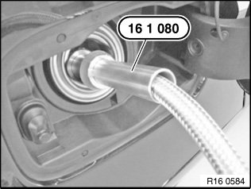
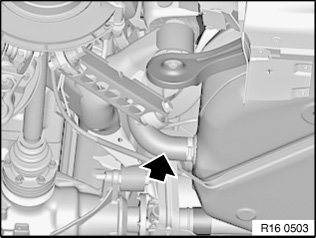
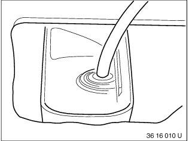

Procedures
16 00 005 Draining And Filling Fuel Tank
Special tools required:

Recycling
Fuel escapes when fuel lines are detached. Have a suitable collecting container ready.
Catch and dispose of escaping fuel.
Observe country-specific waste disposal regulations.

IMPORTANT:
Ensure adequate ventilation in the place of work.
Avoid skin contact (wear gloves).
Connect the exhaust and extraction systems to the exhaust tailpipe.
The electric fuel pump must not operate without fuel. After completing repairs but before starting the engine for the first time, fill the fuel tank with min. 5 l fuel through the fuel filler pipe.
Do not damage non-return flap when pulling out extraction hose.

Diesel vehicles:
NOTE: Before starting the engine for the first time, if the tank has been run dry or drawn off, fill with diesel fuel and turn on ignition for approx. 1 minute. The fuel circuit is thus filled and vented, which results in the engine firing more quickly.
Drawing off fuel:
Start engine and allow to run.
NOTE:
The electric fuel pump runs.
In this way, the fuel is repumped through the suction jet pump from the left to the right side of the fuel tank.
Fuel can be drawn out of left and right sides of tank through filler neck, leaving only a small residue. The residual quantity is drawn off through the service opening (on right/left).

Insert special tool 16 1 080 into filler neck.
Special tool 16 1 080 has two different diameters for petrol and diesel vehicles.
Slide extraction hose of extractor unit, refer to BMW Service Workshop Equipment and Planning Documentation, through special tool 16 1 080 into the fuel filler pipe, turning in the process if necessary.
Insertion length approx. 120 cm.
IMPORTANT: Comply with the following instruction if the extraction hose can only be inserted approx. 100 cm before meeting resistance.
Draw off fuel as much as possible with extractor unit, refer to BMW Service Workshop Equipment and Planning Documentation.
Follow drawing off of fuel on fuel gauge in instrument cluster.

NOTE:
If the extraction hose meets resistance at an insertion length of approx. 100 cm, a second person must press gently against the rubber hose of the filler pipe.
Only for US cars with N51 engines (metal filler pipe).
The extraction hose is correctly positioned in the tank at an insertion length of approx. 120 cm.
IMPORTANT: Watch out for escaping fuel when withdrawing the extraction hose from the filler pipe.
Drawing off residual fuel quantity:
Drawing off residual fuel amount is not included in the time value of this operation.
IMPORTANT:
Ensure car interior is adequately ventilated.
Catch dripping fuel in a suitable container.
Remove left sensor unit.
Remove right sensor unit.
Draw off residual fuel quantity through service openings.
NOTE: Only for US cars with N51 engines.

Fuel filling:
Insert special tool 16 1 080 into filler neck.
Special tool 16 1 080 has two different diameters for petrol and diesel vehicles.
Slide extraction hose of extractor unit, refer to BMW Service Workshop Equipment and Planning Documentation, approx. 40 cm into fuel filler pipe.
Fill fuel from suction extractor unit.

Drawing off after fault in suction jet pump:
Draw off right half of tank completely through fuel filler pipe.
Remove cap from left service opening.
Insert extraction hose through service opening in tank, fuel (also residual quantity) can be drawn off.